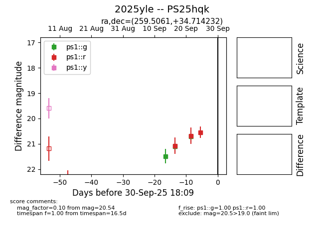

TNS: 2025yle
YSE: 2025yle
2025yle (yse,tns)
PS25hqk (panstarrs)
equatorial (ra, dec) = (259.5061,+34.71423)
galactic (l, b) = (58.3267,+33.34445)

last ps1::g=20.70, ps1::r=20.54
3 ps1::g, 3 ps1::r detections